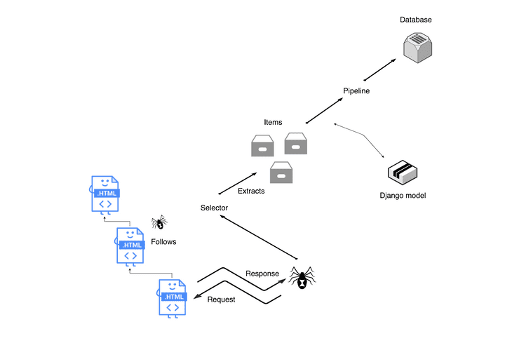

DOCUMENTO DE ARQUITETURA DE SOFTWARE
Histórico de revisão
| Data | Versão | Descrição | Autor(es) |
|---|---|---|---|
| 03/07/2022 | 0.1 | Abertura do documento de Arquitetura | Abdul hannan |
| 24/07/2022 | 0.2 | Adcionando REPRESENTAÇÃO ARQUITETURAL,Diagrama de Classe e Pacotes | Abdul hannan |
| 25/07/2022 | 1.2 | Atualizacao do documento de Pacotes e REPRESENTAÇÃO ARQUITETURAL | Abdul hannan |
| 27/07/2022 | 1.3 | Adcionando Documento de Caso do Uso | Abdul hannan |
INTRODUÇÃO
1.VISÃO GERAL
O documento de arquitetura está organizado em informações da seguinte maneira: 1. VISÃO GERAL 2. Finalidade 3. Escopo 4. CONFIGURAÇÕES, ACRÔNIMOS E ABREVIAÇÕES 5. REPRESENTAÇÃO ARQUITETURAL 6. Diagrama de Caso de uso 7. Diagrama de Classes 8. Diagrama de Pacotes
2. FINALIDADE
Cebraspe Tracker é uma funcionalidade a qual vai funcionar em uma pagina web e é baseada em web crawler. O site vai ser criado com intuito de ajudar estudantes que estão em processo seletivo, mais especificamente o PAS pois o mesmo acaba tendo varias chamadas e muitos alunos acabam perdendo sua vaga, por isso o Cebraspe Tracker vai ajudar essas pessoas, as pessoas ao se cadastrarem no site elas seriam informados via email e whatsapp caso fossem aprovadas..
3. ESCOPO
Cebaspre tracker é a solução perfeita para estudantes que estao em processo seletivo tanto pra ajudar as pessoas que perdem sua vaga por falta de entendiento sobre o processo seletivo tanto quanto as pessoas que sofrem de uma ansiedade pesada, para poder tranquiliza-las e tirar das costas dessas pessoas o peso de ficar atualizando todos os dias a pagina do concurso público PAS.
3.CONFIGURAÇÕES, ACRÔNIMOS E ABREVIAÇÕES
- API: É um acrônimo para Application Programming Interface(Interface de programação de aplicações). A API é um conjunto de definições e protocolos usados no desenvolvimento e na integração de um software, permitindo a interação com outros produtos sem a necessidade de interação com outro software.
- UML: É um acrônimo para Unified Modeling Language(linguagem de modelagem unificada). O UML é uma linguagem utilizada para visualizar, especificar, construir e documentar a arquitetura completa de um software, fornecendo informações detalhadas para o desenvolvedor implementar o software.
- UI: É uma sigla para User Interface(interface do usuário). É a área que está associada a criação das interfaces que interagem diretamente com o usuário do software, promovendo formas fáceis e amigáveis de interação no programa.
5.REPRESENTAÇÃO ARQUITETURAL
-Front-end:
- React: É um conjunto de bibliotecas de código aberto seguro para a criação de UIs interativas de forma mais fácil. Toda lógica é escrita em JavaScript da Repassagem de dados ao longo da passagem de dados. Essa tecnologia foi escolhida por quantidade de conteúdo disponível na internet, para o treinamento e aprendizado da equipe, outro ponto positivo é o fórum de dúvidas acerca do assunto estar sempre a disposição.

-Back-end:
- Django: REST framework (DRF) é um kit de ferramentas poderoso e flexível para construir APIs da Web. Seu principal benefício é que torna a serialização muito mais fácil. O framework Django REST é baseado nas visualizações baseadas em classes do Django, então é uma excelente opção se você estiver familiarizado com o Django. Ele adota implementações como visualizações baseadas em classes, formulários, validador de modelo, QuerySet e muito mais.

-Scrapy-selenium:
- Scrapy-selenium é um middleware que é usado em web scraping. scrapy não suporta a scraping dos sites modernos que usam estruturas javascript e esta é a razão pela qual esse middleware é usado com scrapy para crawl esses sites modernos. O Scrapy-selenium fornece as funcionalidades do selenium que ajudam no trabalho com sites javascript. Outra vantagem proporcionada por isso é o driver pelo qual também podemos ver o que está acontecendo nos bastidores. Como o selênium é uma ferramenta automatizada, ele também nos fornece como lidar com tags de entrada e scrap de acordo com o que você passa no campo de entrada.

5.Diagrama de caso de uso
- Usuário(Aluno) do sistema que terá acesso, após a autenticação, tera a opção de receber o tipo de notificação que ele deseja receber.

6.Diagrama de Classes
- Essa é a primeira versão das classes no diagrama de classe do projeto Cebraspe-Tracker.

7.Diagrama de Pacotes
- Essa é a primeira versão das classes no diagrama de Pacotes do projeto Cebraspe-Tracker.